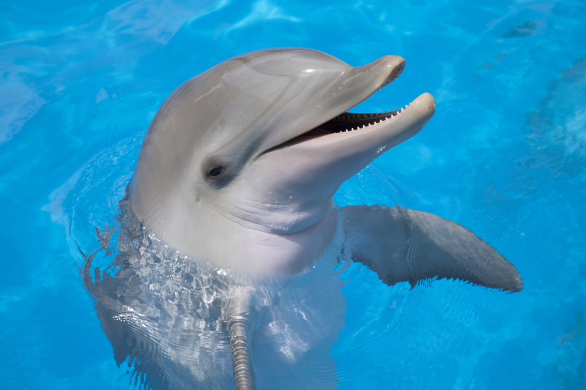

고래의 종류
이빨고래
- 돌고래

무리를 이루어 생활하며, 똑똑하고 기억력을 가지고 있다.
- 범고래

바다의 포식자. 귀여운 외모와 달리 난폭한 성격으로 유명하다. 지능이 높다.
- 향고래

머리의 길이가 몸 길이의 1/3을 차지한다. 허파에 산소를 저장하는 능력이 뛰어나서
약 한 시간 정도 물 속에 견딜 수 있으며, 심해까지 내려가 대왕오징어를 잡아먹기도 한다.
수염고래
- 혹등고래

위험으로부터 다른 동물을 지켜주는 보호본능을 가진 고래로 유명하다.
- 대왕고래

30톤이 넘는 지방층 피부를 가지고 있으며, 혀의 무게만으로도 3톤이 넘어가는 크기의 고래이다.
수명은 약 100년 이상이며, 주로 크릴새우를 먹기 때문에 먹이가 풍부한 북극해나 남극에서 자주 발견된다.
출처: https://blog.naver.com/petgeek/221337848492